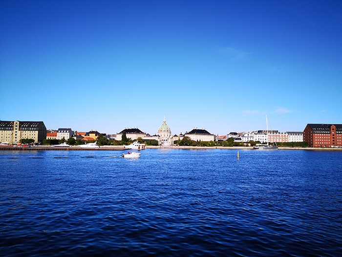
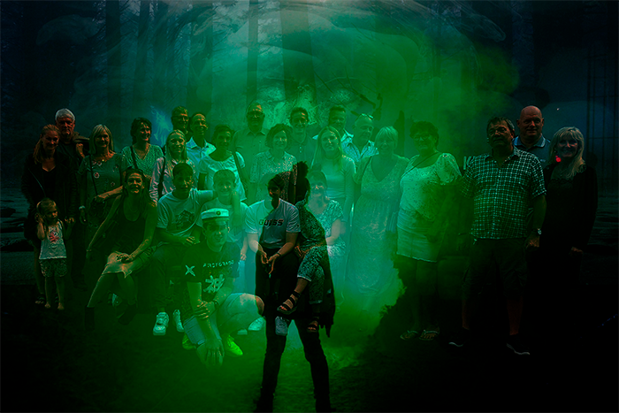
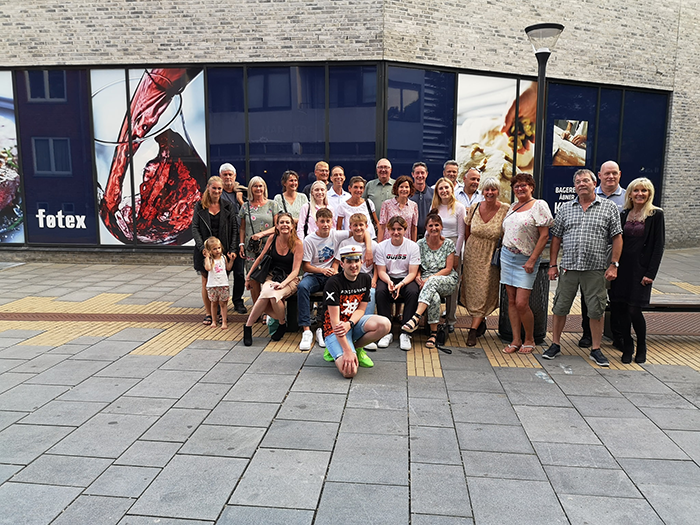

Photoshop
Første Photoshop opgave
Her ses billedet som jeg valgte at buge til første Photoshop opgave hvor der skulle fjernes og tilføjes elemter. Her har jeg valgt at skifte den blå himmel ud med Mars og har sat en ubåd ind, som kommer op af København havn.
Følg med
Billedet før Photoshop
Her ses billedet før det kom i Photoshop. Billedet er et af de mange billeder jeg tog på phototuren ved Operahuset og Reffen i København for at tage billeder til fremtidige brug.
Photoshop
Jeg smed billedet over i Photoshopog leget lidt med lagene, lyset, farverne og satte både en mørk skov i baggrunden, nogle øjne bag os og foran noget grøn røg med en skygge der kigger på os.
orginalfællesbilledet
Billedet her er fra mit studentergilde, hvor vi spiste på den kinesiske i Birkerød Ming Zhu hvor vi fik taget et fællesbillede ude på pladsen ved resturanten.
